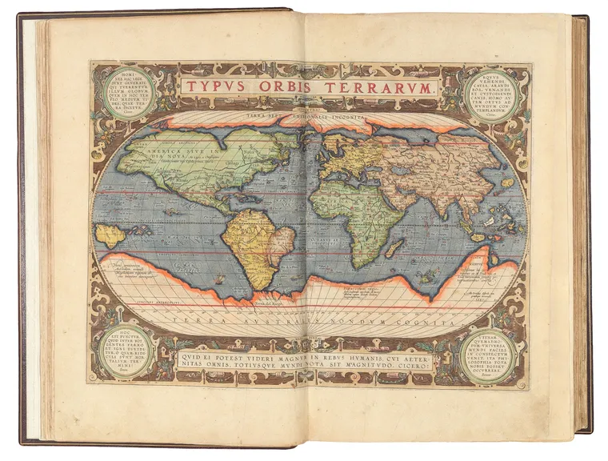
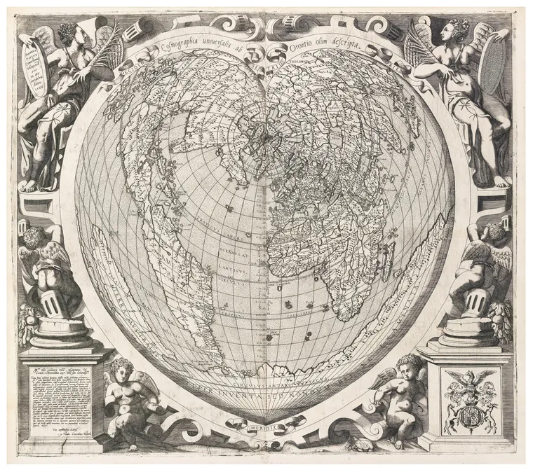

Période Antique
Introduction
La cartographie dans l'Antiquité a joué un rôle crucial dans le développement des premières civilisations. Utilisée pour la gestion des territoires, le commerce et les expéditions militaires, elle reflétait souvent les connaissances limitées de l'époque et les croyances mythologiques.
Les premières tentatives de cartographie
Les premières cartes connues proviennent de la Mésopotamie, où des tablettes d'argile gravées montraient les terres agricoles et les routes commerciales. Ces représentations étaient rudimentaires mais fournissaient des informations précieuses sur la répartition des ressources et les voies de transport.
Cette carte illustre l'une des premières tentatives de représentation du monde antique, centrée sur la ville de Babylone. Elle montre une conception circulaire du monde, entourée d'eau, avec des régions symbolisées par des cercles concentriques.
Influence des civilisations antiques
Les Égyptiens ont perfectionné la cartographie pour la planification de projets d'irrigation et la construction des pyramides. Le Nil était souvent au centre de leurs cartes, représentant l'élément vital de leur civilisation.
Un exemple détaillé montrant les territoires de l'Empire romain et leurs routes commerciales. Les Romains utilisaient des cartes pour organiser leur vaste réseau routier et administrer efficacement les provinces éloignées.
Les contributions des Grecs à la cartographie
Les Grecs ont apporté des innovations majeures en matière de cartographie, en introduisant des concepts mathématiques et des tentatives de projection du globe sur des surfaces planes. Ptolémée, dans son ouvrage Géographie, a établi un système de coordonnées permettant de localiser des lieux de manière plus précise.
Techniques et matériaux utilisés
- Tablettes d'argile utilisées par les Mésopotamiens.
- Papyrus et fresques murales chez les Égyptiens.
- Peaux de parchemin pour la cartographie romaine et grecque.
Cette carte illustre l'utilisation de la cartographie pour représenter les régions du monde connues, en tenant compte des données recueillies par les voyageurs et explorateurs antiques.
La cartographie artistique de l'Antiquité
Outre leur aspect fonctionnel, les cartes antiques étaient souvent ornées de dessins illustrant les mythes et les légendes associées aux terres inconnues. Des éléments tels que les dieux des vents et les créatures marines étaient couramment représentés.
Conclusion
La cartographie antique a jeté les bases des techniques modernes en fournissant des outils essentiels pour l'organisation sociale et politique. Les cartes de cette époque témoignent non seulement des connaissances géographiques, mais aussi des croyances et des perspectives du monde antique.